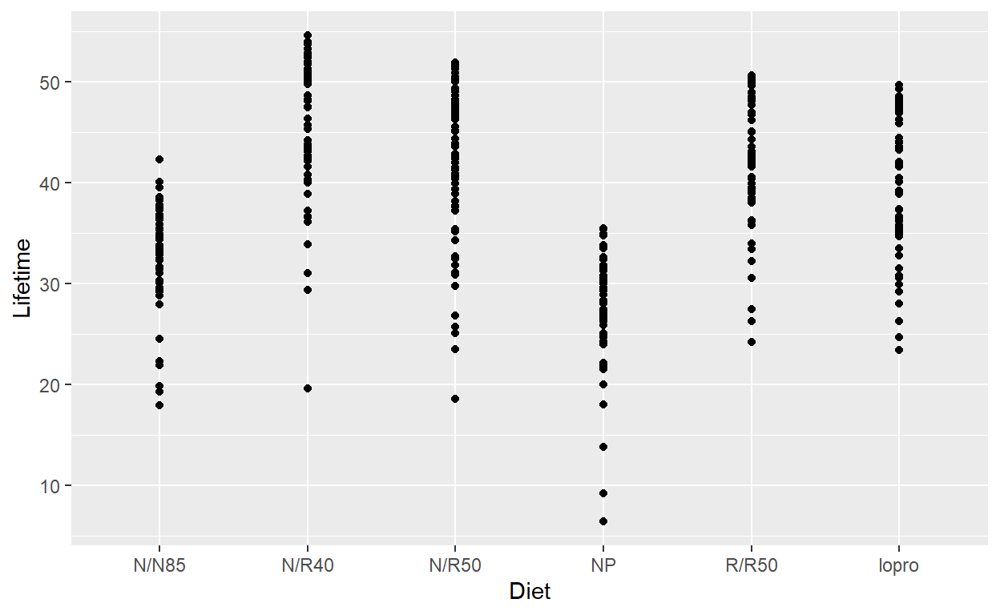
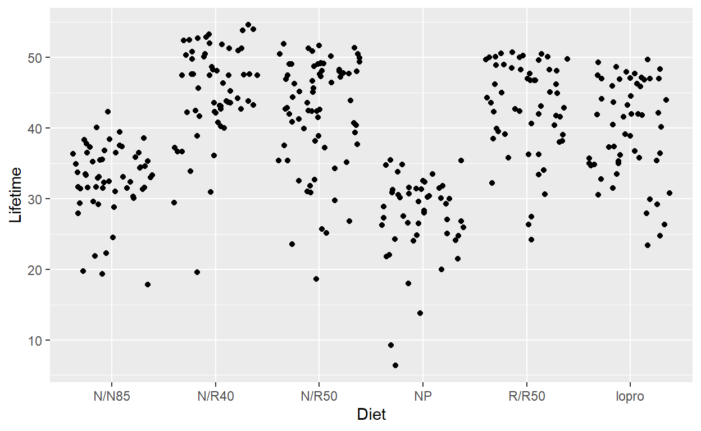
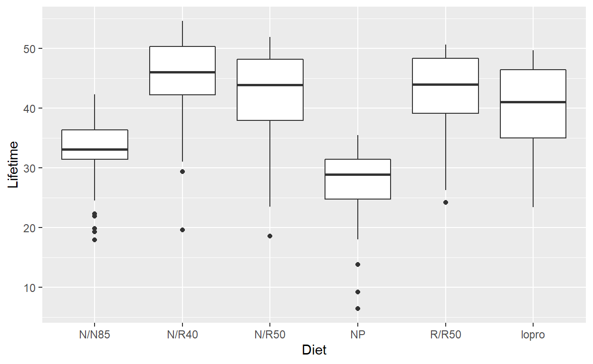
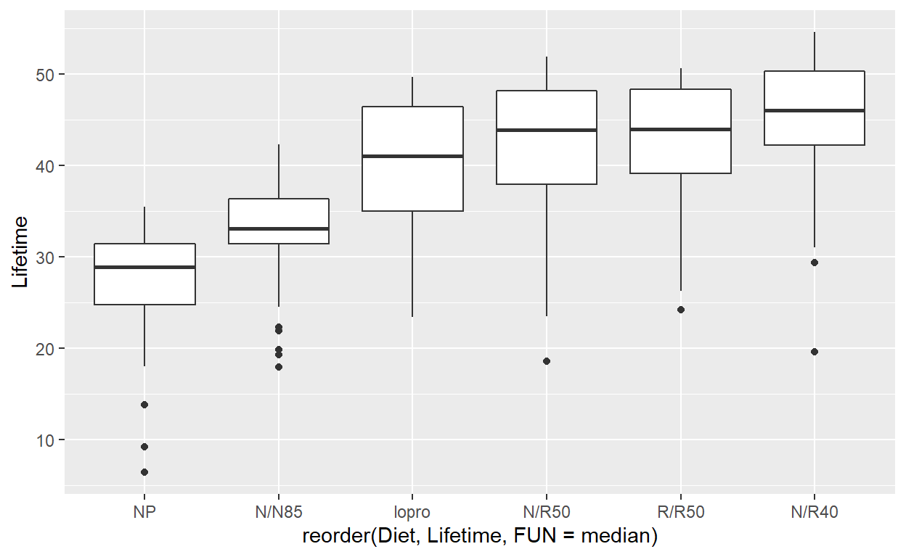
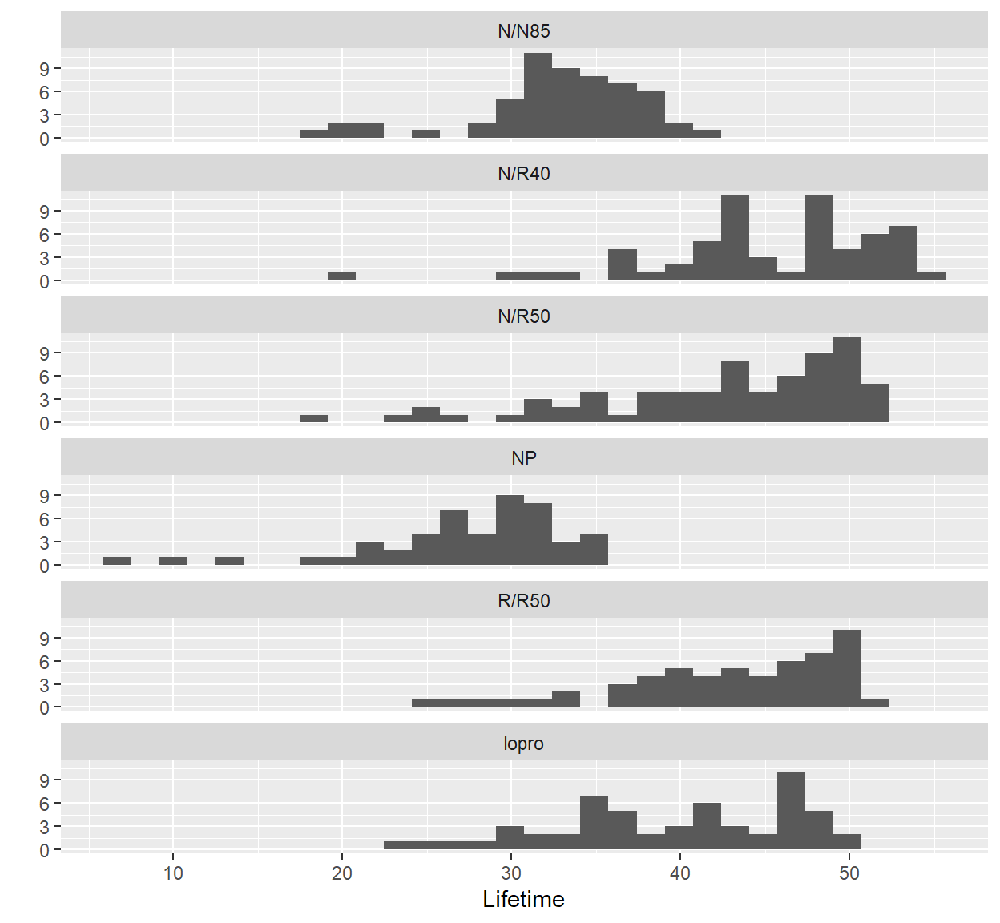

This lab explores some tools for manipulating data frames to get group summaries, both graphical and numeric. These tools facilitate exploratory analysis, as part of the process of comparing groups.
To learn these tools, we use the the Diet Restriction and Longevity study stored in Sleuth3 as case0501. Run ?case0501 to read more about the study.
head(case0501) # First few rows of datastr(case0501) # Structure of case0501 data object## 'data.frame': 349 obs. of 2 variables:
## $ Lifetime: num 35.5 35.4 34.9 34.8 33.8 33.5 32.6 32.4 31.8 31.6 ...
## $ Diet : Factor w/ 6 levels "N/N85","N/R40",..: 4 4 4 4 4 4 4 4 4 4 ...Recall that str() is great way to get a compact summary of an R data object. It returns the class of the object, the number of observations and variables, the class of those variables, and the first few values of each variable. As you can see (along with reading ?case0501), each row in the case0501 data frame corresponds to one mouse, and contains information about which of six Diet treatments (Factor w/ 6 levels) that mouse was assigned, and its Lifetime is reported in months (numeric).
qplot(x = Diet, y = Lifetime, data = case0501)
This plot helps us get an overall sense of the data we are studying. The diet treatments are on the x-axis (the first argument to qplot()), and the lifetimes are on the y-axis (the second argument to qplot()). It’s just a scatter plot where one of or variables happens to be categorical.
With this plot we get a general sense of the location and spread of lifetimes within each diet. We can clearly see mice on some diets tends to have longer lifetimes (N/R40 for example). A drawback to this plot is the problem of overlapping points. For example, if five mice have the same lifetime in the same treatment group, they will only look like one mouse! One solution to this problem is introduce a little random noise into the observations: a process called jittering. In ggplot2 this is handled by changing the geom to "jitter":
qplot(Diet, Lifetime, data = case0501,
geom = "jitter")
This plot now gives us a better picture of how many mice are in the areas of high density, but of course the locations are no longer exact.
Another alternative is the boxplot.
qplot(Diet, Lifetime, data = case0501, geom = "boxplot")
Now each treatment group is represented by a boxplot. This is a helpful summary since it directly presents a measure of center and spread, but be aware we necessarily lose some information by reducing our data to this smaller set of summary statistics.
In some cases it might be nice to see these plots ordered by increasing medians.
qplot(reorder(Diet, Lifetime, FUN = median),
Lifetime, data = case0501, geom = "boxplot")
The reorder() function put the Diet boxplots in order of increasing median Lifetime.
Sometimes a histogram is preferred to visually convey summary information. The following code constructs one histogram for each diet.
qplot(Lifetime, data = case0501) + facet_wrap(~ Diet, ncol = 1)
Note that x-axis is fixed across all diets, which makes it easy to compare the spread and location of the lifetimes by diet type. In this code qplot automatically defines the bin width to range/30. Keep in mind that bin widths can drastically affect the appearance of a histogram.
These tools give an excellent visual understanding of the data, but we also want exact numeric characteristics.
The next line calculates the mean lifetime of each diet.
tapply(case0501$Lifetime, case0501$Diet, mean) # Group means## N/N85 N/R40 N/R50 NP R/R50 lopro
## 32.69123 45.11667 42.29718 27.40204 42.88571 39.68571The function tapply() applies a function to groups of data. The function takes 3 arguments: (i) the first argument specifies the vector we want to apply the function to, in this case the Lifetime column in case0501, (ii) the second argument is the vector which provides the grouping variable (i.e. the categorical variable) in this case the Diet column in case0502, and (iii) the third argument specifies the function we want to apply, in this case mean().
Typing case0501$ repeatedly can get tiresome, so one way to avoid it is to wrap our call to tapply() in the function with(). The first argument to with() specifies where to look for the variables in the second argument (in this case our tapply() call without all the case0501$s):
with(case0501, tapply(Lifetime, Diet, mean)) # Group means## N/N85 N/R40 N/R50 NP R/R50 lopro
## 32.69123 45.11667 42.29718 27.40204 42.88571 39.68571We can easily swap out mean for other functions to get other summaries:
with(case0501, tapply(Lifetime, Diet, sd)) # standard deviations by group## N/N85 N/R40 N/R50 NP R/R50 lopro
## 5.125297 6.703406 7.768195 6.133701 6.683152 6.991695n_by_group <- with(case0501, tapply(Lifetime, Diet, length)) # Group sizes
n_by_group## N/N85 N/R40 N/R50 NP R/R50 lopro
## 57 60 71 49 56 56Notice that the group sizes are saved as n_by_group, which can be very useful for later operations.
Aside: You want to be a little cautious with that last example, length() tells you how many rows are in the corresponding group, but they could potentially contain missing values (NA), which we wouldn’t want to neccessarily count. A safer way might be:
n_by_group <- with(case0501,
tapply(Lifetime, Diet, function(x) sum(!is.na(x)))) This section contains the code from Lecture 2 of Module 1, which performs the one-way ANOVA F-test. First, we again review the structure of the data.
head(case0501)str(case0501)## 'data.frame': 349 obs. of 2 variables:
## $ Lifetime: num 35.5 35.4 34.9 34.8 33.8 33.5 32.6 32.4 31.8 31.6 ...
## $ Diet : Factor w/ 6 levels "N/N85","N/R40",..: 4 4 4 4 4 4 4 4 4 4 ...qplot(Diet, Lifetime, data=case0501)Next we define the number of groups, I, and the total number of observations, N:
I <- length(unique(case0501$Diet))
N <- nrow(case0501)Then we perform the computations to find the overall mean (stored as case0501$overall_mean) and the group means (stored as case0501$group_mean):
case0501$overall_mean <- with(case0501, mean(Lifetime))
case0501$group_mean <- with(case0501, ave(Lifetime, Diet))Using the overall mean and the group mean, we can then compute the within-group sum-of-squares (within_group_SS) and the between-groups sum-of-squares (between_group_SS).
within_group_SS <- with(case0501, sum((Lifetime - group_mean)^2))
between_group_SS <- with(case0501, sum((group_mean - overall_mean)^2))Finally, we compute the F-statistic:
F_stat <- (between_group_SS/(I-1))/(within_group_SS/(N - I))
F_stat## [1] 57.10431The p-value is then obtained using the pf() function, where the first argument is the value of the F-statistic we just computed, the second argument is the numerator degrees of freedom (I-1, which is the number of groups minus one), and the third argument is the denominator degrees of freedom (N-1, which is the total sample size minus one).
1 - pf(F_stat, I-1, N-1)## [1] 0Instead of doing all of these computations by hand, we could just have R do it for us using the oneway.test() function. First, you can read the help file for this function by typing:
help(oneway.test)## starting httpd help server ... doneThis function takes several arguments: the first argument is a formula that specifies the outcome variable first (in this case, the Lifetime variable), then a tilde (~), and then the grouping variable (in this case, the Diet variable). We also have to tell the function where to look for these variables—that’s what the data = argument does.
Finally, we have the choice of performing the standard one-way ANOVA, which assumes that the population variances are all equal, or we can perform the Welch-Satterthwaite one-way ANOVA, which modifies the statistic and reference F-distribution to account for possibly unequal population variances. To perform standard one-way ANOVA (again, which assumes all population variances are equal), we use the var.equal = T argument.
oneway.test(Lifetime ~ Diet, data = case0501, var.equal = T)##
## One-way analysis of means
##
## data: Lifetime and Diet
## F = 57.104, num df = 5, denom df = 343, p-value < 2.2e-16Note that the output here matches the test statistic value and the p-value that we computed by hand.
Next we can instead do the Welch-Satterthwaite one-way ANOVA, using the var.equal = F argument:
# Try without assuming equal variance
oneway.test(Lifetime ~ Diet, data = case0501, var.equal = F)##
## One-way analysis of means (not assuming equal variances)
##
## data: Lifetime and Diet
## F = 64.726, num df = 5.00, denom df = 157.84, p-value < 2.2e-16The test statistic changes, but the p-value is still very small! In other datasets you might find that the p-values are very different if you use the var.equal=T option or the var.equal=F option.
R also has a function kruskal.test() that performs the Kruskal-Wallace Test. It has very similar structure and arguments to the oneway.test() function:
kruskal.test(Lifetime ~ Diet, data = case0501)##
## Kruskal-Wallis rank sum test
##
## data: Lifetime by Diet
## Kruskal-Wallis chi-squared = 159.01, df = 5, p-value < 2.2e-16The output of this function is also similar to the output of the oneway.test() function: it provides a test statistic value (here the value of the test statistic is 159.01) and a p-value (here the value of the p-value is effectively 0).